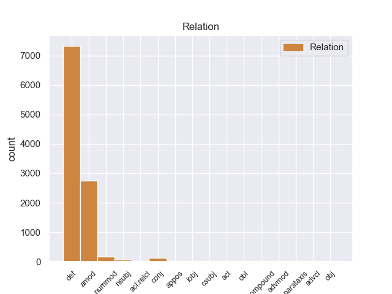
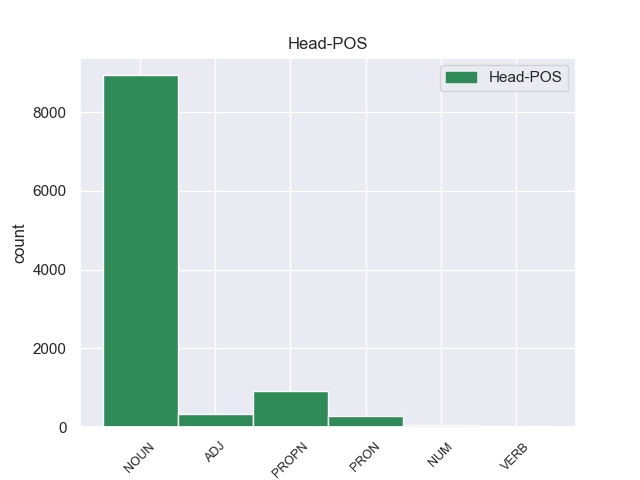
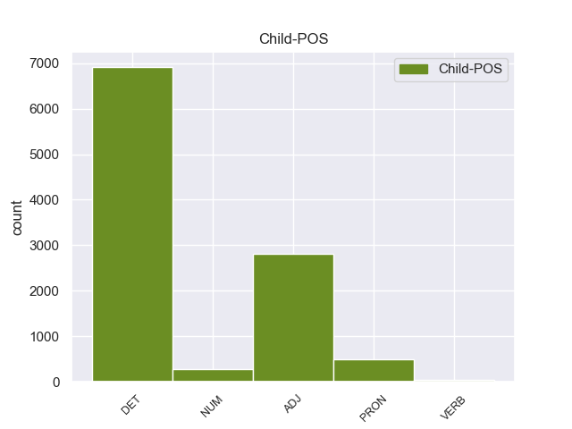

Distribution of features within this leaf



Agreement Rules sorted by frequency.
- When the dependent token is the determiner(det) of the head token, and the dependent token is DET.
1 Αυτό _ _ _ _ 0 _ _ _
2 μπορεί _ _ _ _ 0 _ _ _
3 να _ _ _ _ 0 _ _ _
4 μην _ _ _ _ 0 _ _ _
5 οδηγήσει _ _ _ _ 0 _ _ _
6 σ _ _ _ _ 0 _ _ _
7 τη _ _ _ _ 0 _ _ _
8 λήξη _ _ _ _ 0 _ _ _
9 του _ _ _ _ 0 _ _ _
10 εν _ _ _ _ 0 _ _ _
11 λόγω _ _ _ _ 0 _ _ _
12 ζητήματος _ _ _ _ 0 _ _ _
13 αλλά _ _ _ _ 0 _ _ _
14 , _ _ _ _ 0 _ _ _
15 σ _ _ _ _ 0 _ _ _
16 τη _ _ _ _ 0 _ _ _
17 μορφή _ _ _ _ 0 _ _ _
18 υπό _ _ _ _ 0 _ _ _
19 την _ _ _ _ 0 _ _ _
20 οποία _ _ _ _ 0 _ _ _
21 την _ _ _ _ 0 _ _ _
22 λάβαμε _ _ _ _ 0 _ _ _
23 , _ _ _ _ 0 _ _ _
24 αυτή _ _ _ _ 0 _ _ _
25 η _ _ _ _ 0 _ _ _
26 αίτηση _ _ _ _ 0 _ _ _
27 άρσης _ _ _ _ 0 _ _ _
28 της _ _ _ _ 0 _ _ _
29 ασυλίας _ _ _ _ 0 _ _ _
30 ήταν _ _ _ _ 0 _ _ _
31 , _ _ _ _ 0 _ _ _
32 κατά _ _ _ _ 0 _ _ _
33 την _ _ _ _ 0 _ _ _
34 άποψη _ _ _ _ 0 _ _ _
35 της _ _ _ _ 0 _ _ _
36 Επιτροπής _ _ _ _ 0 _ _ _
37 Νομικών _ _ _ _ 0 _ _ _
38 Θεμάτων _ _ _ _ 0 _ _ _
39 , _ _ _ _ 0 _ _ _
40 απαράδεκτη _ _ _ _ 0 _ _ _
41 , _ _ _ _ 0 _ _ _
42 άποψη _ _ _ _ 0 _ _ _
43 την _ _ _ _ 0 _ _ _
44 οποία _ _ _ _ 0 _ _ _
45 συνιστώ _ _ _ _ 0 _ _ _
46 σ _ _ _ _ 0 _ _ _
47 το ο DET AtDf Case=Acc|Gender=Neut|Number=Sing 48 det _ _
48 Σώμα σώμα NOUN NOUN Case=Acc|Gender=Neut|Number=Sing 0 _ _ _
49 να _ _ _ _ 0 _ _ _
50 υιοθετήσει _ _ _ _ 0 _ _ _
51 . _ _ _ _ 0 _ _ _
1 Αυτό _ _ _ _ 0 _ _ _
2 μπορεί _ _ _ _ 0 _ _ _
3 να _ _ _ _ 0 _ _ _
4 μην _ _ _ _ 0 _ _ _
5 οδηγήσει _ _ _ _ 0 _ _ _
6 σ _ _ _ _ 0 _ _ _
7 τη _ _ _ _ 0 _ _ _
8 λήξη _ _ _ _ 0 _ _ _
9 του _ _ _ _ 0 _ _ _
10 εν _ _ _ _ 0 _ _ _
11 λόγω _ _ _ _ 0 _ _ _
12 ζητήματος _ _ _ _ 0 _ _ _
13 αλλά _ _ _ _ 0 _ _ _
14 , _ _ _ _ 0 _ _ _
15 σ _ _ _ _ 0 _ _ _
16 τη _ _ _ _ 0 _ _ _
17 μορφή _ _ _ _ 0 _ _ _
18 υπό _ _ _ _ 0 _ _ _
19 την _ _ _ _ 0 _ _ _
20 οποία _ _ _ _ 0 _ _ _
21 την _ _ _ _ 0 _ _ _
22 λάβαμε _ _ _ _ 0 _ _ _
23 , _ _ _ _ 0 _ _ _
24 αυτή _ _ _ _ 0 _ _ _
25 η _ _ _ _ 0 _ _ _
26 αίτηση _ _ _ _ 0 _ _ _
27 άρσης _ _ _ _ 0 _ _ _
28 της _ _ _ _ 0 _ _ _
29 ασυλίας _ _ _ _ 0 _ _ _
30 ήταν _ _ _ _ 0 _ _ _
31 , _ _ _ _ 0 _ _ _
32 κατά _ _ _ _ 0 _ _ _
33 την _ _ _ _ 0 _ _ _
34 άποψη _ _ _ _ 0 _ _ _
35 της _ _ _ _ 0 _ _ _
36 Επιτροπής _ _ _ _ 0 _ _ _
37 Νομικών νομικός ADJ ADJ Case=Gen|Gender=Neut|Number=Plur 38 amod _ _
38 Θεμάτων θέμα NOUN NOUN Case=Gen|Gender=Neut|Number=Plur 0 _ _ _
39 , _ _ _ _ 0 _ _ _
40 απαράδεκτη _ _ _ _ 0 _ _ _
41 , _ _ _ _ 0 _ _ _
42 άποψη _ _ _ _ 0 _ _ _
43 την _ _ _ _ 0 _ _ _
44 οποία _ _ _ _ 0 _ _ _
45 συνιστώ _ _ _ _ 0 _ _ _
46 σ _ _ _ _ 0 _ _ _
47 το _ _ _ _ 0 _ _ _
48 Σώμα _ _ _ _ 0 _ _ _
49 να _ _ _ _ 0 _ _ _
50 υιοθετήσει _ _ _ _ 0 _ _ _
51 . _ _ _ _ 0 _ _ _
1 Αυτό _ _ _ _ 0 _ _ _
2 μπορεί _ _ _ _ 0 _ _ _
3 να _ _ _ _ 0 _ _ _
4 μην _ _ _ _ 0 _ _ _
5 οδηγήσει _ _ _ _ 0 _ _ _
6 σ _ _ _ _ 0 _ _ _
7 τη _ _ _ _ 0 _ _ _
8 λήξη _ _ _ _ 0 _ _ _
9 του _ _ _ _ 0 _ _ _
10 εν _ _ _ _ 0 _ _ _
11 λόγω _ _ _ _ 0 _ _ _
12 ζητήματος _ _ _ _ 0 _ _ _
13 αλλά _ _ _ _ 0 _ _ _
14 , _ _ _ _ 0 _ _ _
15 σ _ _ _ _ 0 _ _ _
16 τη _ _ _ _ 0 _ _ _
17 μορφή _ _ _ _ 0 _ _ _
18 υπό _ _ _ _ 0 _ _ _
19 την _ _ _ _ 0 _ _ _
20 οποία _ _ _ _ 0 _ _ _
21 την _ _ _ _ 0 _ _ _
22 λάβαμε _ _ _ _ 0 _ _ _
23 , _ _ _ _ 0 _ _ _
24 αυτή αυτός PRON PRON Case=Nom|Gender=Fem|Number=Sing|Person=3|PronType=Dem 26 det _ _
25 η _ _ _ _ 0 _ _ _
26 αίτηση αίτηση NOUN NOUN Case=Nom|Gender=Fem|Number=Sing 0 _ _ _
27 άρσης _ _ _ _ 0 _ _ _
28 της _ _ _ _ 0 _ _ _
29 ασυλίας _ _ _ _ 0 _ _ _
30 ήταν _ _ _ _ 0 _ _ _
31 , _ _ _ _ 0 _ _ _
32 κατά _ _ _ _ 0 _ _ _
33 την _ _ _ _ 0 _ _ _
34 άποψη _ _ _ _ 0 _ _ _
35 της _ _ _ _ 0 _ _ _
36 Επιτροπής _ _ _ _ 0 _ _ _
37 Νομικών _ _ _ _ 0 _ _ _
38 Θεμάτων _ _ _ _ 0 _ _ _
39 , _ _ _ _ 0 _ _ _
40 απαράδεκτη _ _ _ _ 0 _ _ _
41 , _ _ _ _ 0 _ _ _
42 άποψη _ _ _ _ 0 _ _ _
43 την _ _ _ _ 0 _ _ _
44 οποία _ _ _ _ 0 _ _ _
45 συνιστώ _ _ _ _ 0 _ _ _
46 σ _ _ _ _ 0 _ _ _
47 το _ _ _ _ 0 _ _ _
48 Σώμα _ _ _ _ 0 _ _ _
49 να _ _ _ _ 0 _ _ _
50 υιοθετήσει _ _ _ _ 0 _ _ _
51 . _ _ _ _ 0 _ _ _
1 πρόκειται _ _ _ _ 0 _ _ _
2 για _ _ _ _ 0 _ _ _
3 αυτό _ _ _ _ 0 _ _ _
4 το _ _ _ _ 0 _ _ _
5 οποίο _ _ _ _ 0 _ _ _
6 αποκαλύφθηκε _ _ _ _ 0 _ _ _
7 κατά _ _ _ _ 0 _ _ _
8 τη _ _ _ _ 0 _ _ _
9 διάρκεια _ _ _ _ 0 _ _ _
10 αυτής _ _ _ _ 0 _ _ _
11 της _ _ _ _ 0 _ _ _
12 διαδικασίας _ _ _ _ 0 _ _ _
13 , _ _ _ _ 0 _ _ _
14 ότι _ _ _ _ 0 _ _ _
15 ο _ _ _ _ 0 _ _ _
16 Εισαγγελέας _ _ _ _ 0 _ _ _
17 κάποια _ _ _ _ 0 _ _ _
18 στιγμή _ _ _ _ 0 _ _ _
19 ζήτησε _ _ _ _ 0 _ _ _
20 από _ _ _ _ 0 _ _ _
21 την _ _ _ _ 0 _ _ _
22 Πρόεδρο _ _ _ _ 0 _ _ _
23 του _ _ _ _ 0 _ _ _
24 Σώματος _ _ _ _ 0 _ _ _
25 , _ _ _ _ 0 _ _ _
26 την _ _ _ _ 0 _ _ _
27 προκάτοχό _ _ _ _ 0 _ _ _
28 σας _ _ _ _ 0 _ _ _
29 , _ _ _ _ 0 _ _ _
30 λεπτομέρειες _ _ _ _ 0 _ _ _
31 για _ _ _ _ 0 _ _ _
32 την _ _ _ _ 0 _ _ _
33 ψήφο _ _ _ _ 0 _ _ _
34 που _ _ _ _ 0 _ _ _
35 έχουν _ _ _ _ 0 _ _ _
36 δώσει _ _ _ _ 0 _ _ _
37 οι _ _ _ _ 0 _ _ _
38 δύο δύο NUM NUM Case=Nom|Gender=Masc|Number=Plur|NumType=Card 40 nummod _ _
39 συγκεκριμένοι _ _ _ _ 0 _ _ _
40 βουλευτές βουλευτής NOUN NOUN Case=Nom|Gender=Masc|Number=Plur 0 _ _ _
41 προκειμένου _ _ _ _ 0 _ _ _
42 να _ _ _ _ 0 _ _ _
43 διευκρινιστεί _ _ _ _ 0 _ _ _
44 περαιτέρω _ _ _ _ 0 _ _ _
45 η _ _ _ _ 0 _ _ _
46 πιθανότητα _ _ _ _ 0 _ _ _
47 να _ _ _ _ 0 _ _ _
48 είχαν _ _ _ _ 0 _ _ _
49 ασκήσει _ _ _ _ 0 _ _ _
50 αθέμιτη _ _ _ _ 0 _ _ _
51 επιρροή _ _ _ _ 0 _ _ _
52 . _ _ _ _ 0 _ _ _
1 Τα _ _ _ _ 0 _ _ _
2 εγκλήματα _ _ _ _ 0 _ _ _
3 είναι _ _ _ _ 0 _ _ _
4 σοβαρά _ _ _ _ 0 _ _ _
5 και _ _ _ _ 0 _ _ _
6 ανήκουν _ _ _ _ 0 _ _ _
7 σε _ _ _ _ 0 _ _ _
8 μια _ _ _ _ 0 _ _ _
9 κατηγορία _ _ _ _ 0 _ _ _
10 για _ _ _ _ 0 _ _ _
11 την _ _ _ _ 0 _ _ _
12 οποία _ _ _ _ 0 _ _ _
13 κανονικά _ _ _ _ 0 _ _ _
14 δεν _ _ _ _ 0 _ _ _
15 προσφέρεται _ _ _ _ 0 _ _ _
16 βουλευτική _ _ _ _ 0 _ _ _
17 ασυλία _ _ _ _ 0 _ _ _
18 , _ _ _ _ 0 _ _ _
19 επειδή _ _ _ _ 0 _ _ _
20 δεν _ _ _ _ 0 _ _ _
21 αφορούν _ _ _ _ 0 _ _ _
22 τις _ _ _ _ 0 _ _ _
23 συνήθεις συνήθης ADJ ADJ Case=Acc|Gender=Fem|Number=Plur 0 _ _ _
24 και _ _ _ _ 0 _ _ _
25 προσήκουσες προσήκων ADJ ADJ Case=Acc|Gender=Fem|Number=Plur 23 conj _ _
26 δραστηριότητες _ _ _ _ 0 _ _ _
27 βουλευτή _ _ _ _ 0 _ _ _
28 του _ _ _ _ 0 _ _ _
29 Σώματος _ _ _ _ 0 _ _ _
30 , _ _ _ _ 0 _ _ _
31 ή _ _ _ _ 0 _ _ _
32 πολιτικού _ _ _ _ 0 _ _ _
33 που _ _ _ _ 0 _ _ _
34 δραστηριοποιείται _ _ _ _ 0 _ _ _
35 σε _ _ _ _ 0 _ _ _
36 μια _ _ _ _ 0 _ _ _
37 δημοκρατική _ _ _ _ 0 _ _ _
38 κοινωνία _ _ _ _ 0 _ _ _
39 . _ _ _ _ 0 _ _ _
1 Θα _ _ _ _ 0 _ _ _
2 ήθελα _ _ _ _ 0 _ _ _
3 να _ _ _ _ 0 _ _ _
4 επιστήσω _ _ _ _ 0 _ _ _
5 την _ _ _ _ 0 _ _ _
6 προσοχή _ _ _ _ 0 _ _ _
7 όλων _ _ _ _ 0 _ _ _
8 των _ _ _ _ 0 _ _ _
9 συναδέλφων _ _ _ _ 0 _ _ _
10 σ _ _ _ _ 0 _ _ _
11 το _ _ _ _ 0 _ _ _
12 γεγονός _ _ _ _ 0 _ _ _
13 ότι _ _ _ _ 0 _ _ _
14 , _ _ _ _ 0 _ _ _
15 εάν _ _ _ _ 0 _ _ _
16 υπάρχουν _ _ _ _ 0 _ _ _
17 κάποιες _ _ _ _ 0 _ _ _
18 ελευθερίες _ _ _ _ 0 _ _ _
19 οι _ _ _ _ 0 _ _ _
20 οποίες _ _ _ _ 0 _ _ _
21 είναι _ _ _ _ 0 _ _ _
22 ζωτικής _ _ _ _ 0 _ _ _
23 σημασίας _ _ _ _ 0 _ _ _
24 για _ _ _ _ 0 _ _ _
25 την _ _ _ _ 0 _ _ _
26 άσκηση _ _ _ _ 0 _ _ _
27 του _ _ _ _ 0 _ _ _
28 λειτουργήματος _ _ _ _ 0 _ _ _
29 της _ _ _ _ 0 _ _ _
30 δημόσιας _ _ _ _ 0 _ _ _
31 εκπροσώπησης _ _ _ _ 0 _ _ _
32 , _ _ _ _ 0 _ _ _
33 ιδίως _ _ _ _ 0 _ _ _
34 για _ _ _ _ 0 _ _ _
35 ένα _ _ _ _ 0 _ _ _
36 Κοινοβούλιο _ _ _ _ 0 _ _ _
37 σαν _ _ _ _ 0 _ _ _
38 το _ _ _ _ 0 _ _ _
39 δικό _ _ _ _ 0 _ _ _
40 μας _ _ _ _ 0 _ _ _
41 , _ _ _ _ 0 _ _ _
42 η _ _ _ _ 0 _ _ _
43 ελευθερία _ _ _ _ 0 _ _ _
44 της _ _ _ _ 0 _ _ _
45 επικοινωνίας _ _ _ _ 0 _ _ _
46 με _ _ _ _ 0 _ _ _
47 άλλους _ _ _ _ 0 _ _ _
48 πολίτες _ _ _ _ 0 _ _ _
49 και _ _ _ _ 0 _ _ _
50 με _ _ _ _ 0 _ _ _
51 τους _ _ _ _ 0 _ _ _
52 πολίτες _ _ _ _ 0 _ _ _
53 τρίτων τρίτος NUM NUM Case=Gen|Gender=Fem|Number=Plur|NumType=Ord 54 amod _ _
54 χωρών χώρα NOUN NOUN Case=Gen|Gender=Fem|Number=Plur 0 _ _ _
55 , _ _ _ _ 0 _ _ _
56 καθώς _ _ _ _ 0 _ _ _
57 και _ _ _ _ 0 _ _ _
58 η _ _ _ _ 0 _ _ _
59 ελευθερία _ _ _ _ 0 _ _ _
60 μετακίνησης _ _ _ _ 0 _ _ _
61 , _ _ _ _ 0 _ _ _
62 είναι _ _ _ _ 0 _ _ _
63 κρίσιμες _ _ _ _ 0 _ _ _
64 για _ _ _ _ 0 _ _ _
65 τη _ _ _ _ 0 _ _ _
66 διεκπεραίωση _ _ _ _ 0 _ _ _
67 του _ _ _ _ 0 _ _ _
68 έργου _ _ _ _ 0 _ _ _
69 μας _ _ _ _ 0 _ _ _
70 . _ _ _ _ 0 _ _ _
1 Θα _ _ _ _ 0 _ _ _
2 ήθελα _ _ _ _ 0 _ _ _
3 να _ _ _ _ 0 _ _ _
4 επιστήσω _ _ _ _ 0 _ _ _
5 την _ _ _ _ 0 _ _ _
6 προσοχή _ _ _ _ 0 _ _ _
7 όλων _ _ _ _ 0 _ _ _
8 των _ _ _ _ 0 _ _ _
9 συναδέλφων _ _ _ _ 0 _ _ _
10 σ _ _ _ _ 0 _ _ _
11 το _ _ _ _ 0 _ _ _
12 γεγονός _ _ _ _ 0 _ _ _
13 ότι _ _ _ _ 0 _ _ _
14 , _ _ _ _ 0 _ _ _
15 εάν _ _ _ _ 0 _ _ _
16 υπάρχουν _ _ _ _ 0 _ _ _
17 κάποιες _ _ _ _ 0 _ _ _
18 ελευθερίες _ _ _ _ 0 _ _ _
19 οι _ _ _ _ 0 _ _ _
20 οποίες οποίος PRON PRON Case=Nom|Gender=Fem|Number=Plur|Person=3|PronType=Rel 23 nsubj _ _
21 είναι _ _ _ _ 0 _ _ _
22 ζωτικής _ _ _ _ 0 _ _ _
23 σημασίας σημασία NOUN NOUN Case=Gen|Gender=Fem|Number=Sing 0 _ _ _
24 για _ _ _ _ 0 _ _ _
25 την _ _ _ _ 0 _ _ _
26 άσκηση _ _ _ _ 0 _ _ _
27 του _ _ _ _ 0 _ _ _
28 λειτουργήματος _ _ _ _ 0 _ _ _
29 της _ _ _ _ 0 _ _ _
30 δημόσιας _ _ _ _ 0 _ _ _
31 εκπροσώπησης _ _ _ _ 0 _ _ _
32 , _ _ _ _ 0 _ _ _
33 ιδίως _ _ _ _ 0 _ _ _
34 για _ _ _ _ 0 _ _ _
35 ένα _ _ _ _ 0 _ _ _
36 Κοινοβούλιο _ _ _ _ 0 _ _ _
37 σαν _ _ _ _ 0 _ _ _
38 το _ _ _ _ 0 _ _ _
39 δικό _ _ _ _ 0 _ _ _
40 μας _ _ _ _ 0 _ _ _
41 , _ _ _ _ 0 _ _ _
42 η _ _ _ _ 0 _ _ _
43 ελευθερία _ _ _ _ 0 _ _ _
44 της _ _ _ _ 0 _ _ _
45 επικοινωνίας _ _ _ _ 0 _ _ _
46 με _ _ _ _ 0 _ _ _
47 άλλους _ _ _ _ 0 _ _ _
48 πολίτες _ _ _ _ 0 _ _ _
49 και _ _ _ _ 0 _ _ _
50 με _ _ _ _ 0 _ _ _
51 τους _ _ _ _ 0 _ _ _
52 πολίτες _ _ _ _ 0 _ _ _
53 τρίτων _ _ _ _ 0 _ _ _
54 χωρών _ _ _ _ 0 _ _ _
55 , _ _ _ _ 0 _ _ _
56 καθώς _ _ _ _ 0 _ _ _
57 και _ _ _ _ 0 _ _ _
58 η _ _ _ _ 0 _ _ _
59 ελευθερία _ _ _ _ 0 _ _ _
60 μετακίνησης _ _ _ _ 0 _ _ _
61 , _ _ _ _ 0 _ _ _
62 είναι _ _ _ _ 0 _ _ _
63 κρίσιμες _ _ _ _ 0 _ _ _
64 για _ _ _ _ 0 _ _ _
65 τη _ _ _ _ 0 _ _ _
66 διεκπεραίωση _ _ _ _ 0 _ _ _
67 του _ _ _ _ 0 _ _ _
68 έργου _ _ _ _ 0 _ _ _
69 μας _ _ _ _ 0 _ _ _
70 . _ _ _ _ 0 _ _ _
1 Το _ _ _ _ 0 _ _ _
2 Κόμμα _ _ _ _ 0 _ _ _
3 των _ _ _ _ 0 _ _ _
4 Φιλελευθέρων _ _ _ _ 0 _ _ _
5 νικήθηκε _ _ _ _ 0 _ _ _
6 από _ _ _ _ 0 _ _ _
7 την _ _ _ _ 0 _ _ _
8 ενωμένη ενώνω VERB VERB Aspect=Perf|Case=Acc|Gender=Fem|Number=Sing|VerbForm=Part|Voice=Pass 9 amod _ _
9 αντιπολίτευση αντιπολίτευση NOUN NOUN Case=Acc|Gender=Fem|Number=Sing 0 _ _ _
10 , _ _ _ _ 0 _ _ _
11 ο _ _ _ _ 0 _ _ _
12 δε _ _ _ _ 0 _ _ _
13 Βενιζέλος _ _ _ _ 0 _ _ _
14 δεν _ _ _ _ 0 _ _ _
15 εξελέγη _ _ _ _ 0 _ _ _
16 καν _ _ _ _ 0 _ _ _
17 βουλευτής _ _ _ _ 0 _ _ _
18 . _ _ _ _ 0 _ _ _
1 Παρόμοιο _ _ _ _ 0 _ _ _
2 καθεστώς _ _ _ _ 0 _ _ _
3 επιδιώκουν _ _ _ _ 0 _ _ _
4 και _ _ _ _ 0 _ _ _
5 οι _ _ _ _ 0 _ _ _
6 πόλεις πόλη NOUN NOUN Case=Nom|Gender=Fem|Number=Plur 0 _ _ _
7 σ _ _ _ _ 0 _ _ _
8 τα _ _ _ _ 0 _ _ _
9 ανατολικά _ _ _ _ 0 _ _ _
10 της _ _ _ _ 0 _ _ _
11 Λιβύης _ _ _ _ 0 _ _ _
12 , _ _ _ _ 0 _ _ _
13 οι _ _ _ _ 0 _ _ _
14 οποίες _ _ _ _ 0 _ _ _
15 είναι _ _ _ _ 0 _ _ _
16 πλούσιες πλούσιος ADJ ADJ Case=Nom|Gender=Fem|Number=Plur 6 acl:relcl _ _
17 σε _ _ _ _ 0 _ _ _
18 κοιτάσματα _ _ _ _ 0 _ _ _
19 πετρελαίου _ _ _ _ 0 _ _ _
20 . _ _ _ _ 0 _ _ _
1 Ευελπιστώ _ _ _ _ 0 _ _ _
2 ότι _ _ _ _ 0 _ _ _
3 η _ _ _ _ 0 _ _ _
4 απόφαση _ _ _ _ 0 _ _ _
5 αυτή _ _ _ _ 0 _ _ _
6 , _ _ _ _ 0 _ _ _
7 συμπεριλαμβανομένης συμπεριλαμβανόμενος VERB VERB Aspect=Perf|Case=Gen|Gender=Fem|Number=Sing|VerbForm=Part|Voice=Pass 11 acl _ _
8 και _ _ _ _ 0 _ _ _
9 της _ _ _ _ 0 _ _ _
10 αιτιολογικής _ _ _ _ 0 _ _ _
11 έκθεσης έκθεση NOUN NOUN Case=Gen|Gender=Fem|Number=Sing 0 _ _ _
12 που _ _ _ _ 0 _ _ _
13 την _ _ _ _ 0 _ _ _
14 συνοδεύει _ _ _ _ 0 _ _ _
15 , _ _ _ _ 0 _ _ _
16 θα _ _ _ _ 0 _ _ _
17 διαβιβαστεί _ _ _ _ 0 _ _ _
18 σ _ _ _ _ 0 _ _ _
19 τις _ _ _ _ 0 _ _ _
20 γαλλικές _ _ _ _ 0 _ _ _
21 αρχές _ _ _ _ 0 _ _ _
22 , _ _ _ _ 0 _ _ _
23 εφόσον _ _ _ _ 0 _ _ _
24 υπερψηφιστεί _ _ _ _ 0 _ _ _
25 από _ _ _ _ 0 _ _ _
26 το _ _ _ _ 0 _ _ _
27 Κοινοβούλιο _ _ _ _ 0 _ _ _
28 . _ _ _ _ 0 _ _ _
1 Το _ _ _ _ 0 _ _ _
2 Συμβούλιο _ _ _ _ 0 _ _ _
3 υπενθύμισε _ _ _ _ 0 _ _ _
4 επίσης _ _ _ _ 0 _ _ _
5 τη _ _ _ _ 0 _ _ _
6 σπουδαιότητα _ _ _ _ 0 _ _ _
7 που _ _ _ _ 0 _ _ _
8 αποδίδει _ _ _ _ 0 _ _ _
9 η _ _ _ _ 0 _ _ _
10 Ευρωπαϊκή _ _ _ _ 0 _ _ _
11 Ένωση _ _ _ _ 0 _ _ _
12 σ _ _ _ _ 0 _ _ _
13 την _ _ _ _ 0 _ _ _
14 προσχώρηση _ _ _ _ 0 _ _ _
15 της _ _ _ _ 0 _ _ _
16 Κούβας _ _ _ _ 0 _ _ _
17 σ _ _ _ _ 0 _ _ _
18 τις _ _ _ _ 0 _ _ _
19 αρχές _ _ _ _ 0 _ _ _
20 που _ _ _ _ 0 _ _ _
21 περιλαμβάνονται _ _ _ _ 0 _ _ _
22 σ _ _ _ _ 0 _ _ _
23 το _ _ _ _ 0 _ _ _
24 Σύμφωνο σύμφωνο NOUN NOUN Case=Acc|Gender=Neut|Number=Sing 0 _ _ _
25 των _ _ _ _ 0 _ _ _
26 Ηνωμένων _ _ _ _ 0 _ _ _
27 Εθνών _ _ _ _ 0 _ _ _
28 σχετικά _ _ _ _ 0 _ _ _
29 με _ _ _ _ 0 _ _ _
30 τα _ _ _ _ 0 _ _ _
31 ατομικά _ _ _ _ 0 _ _ _
32 και _ _ _ _ 0 _ _ _
33 τα _ _ _ _ 0 _ _ _
34 πολιτικά _ _ _ _ 0 _ _ _
35 δικαιώματα _ _ _ _ 0 _ _ _
36 και _ _ _ _ 0 _ _ _
37 σε _ _ _ _ 0 _ _ _
38 εκείνο εκείνος PRON PRON Case=Acc|Gender=Neut|Number=Sing|Person=3|PronType=Dem 24 conj _ _
39 που _ _ _ _ 0 _ _ _
40 αφορά _ _ _ _ 0 _ _ _
41 τα _ _ _ _ 0 _ _ _
42 οικονομικά _ _ _ _ 0 _ _ _
43 , _ _ _ _ 0 _ _ _
44 κοινωνικά _ _ _ _ 0 _ _ _
45 και _ _ _ _ 0 _ _ _
46 πολιτιστικά _ _ _ _ 0 _ _ _
47 δικαιώματα _ _ _ _ 0 _ _ _
48 , _ _ _ _ 0 _ _ _
49 και _ _ _ _ 0 _ _ _
50 εκφράζει _ _ _ _ 0 _ _ _
51 την _ _ _ _ 0 _ _ _
52 επιθυμία _ _ _ _ 0 _ _ _
53 του _ _ _ _ 0 _ _ _
54 να _ _ _ _ 0 _ _ _
55 υπογράψει _ _ _ _ 0 _ _ _
56 η _ _ _ _ 0 _ _ _
57 Κούβα _ _ _ _ 0 _ _ _
58 όσο _ _ _ _ 0 _ _ _
59 το _ _ _ _ 0 _ _ _
60 δυνατόν _ _ _ _ 0 _ _ _
61 συντομότερα _ _ _ _ 0 _ _ _
62 και _ _ _ _ 0 _ _ _
63 τα _ _ _ _ 0 _ _ _
64 δύο _ _ _ _ 0 _ _ _
65 αυτά _ _ _ _ 0 _ _ _
66 σύμφωνα _ _ _ _ 0 _ _ _
67 . _ _ _ _ 0 _ _ _
1 Ενώ _ _ _ _ 0 _ _ _
2 τον _ _ _ _ 0 _ _ _
3 Ιανουάριο_του_1897 _ _ _ _ 0 _ _ _
4 γίνονταν _ _ _ _ 0 _ _ _
5 σφαγές _ _ _ _ 0 _ _ _
6 σ _ _ _ _ 0 _ _ _
7 τα _ _ _ _ 0 _ _ _
8 Χανιά _ _ _ _ 0 _ _ _
9 και _ _ _ _ 0 _ _ _
10 σ _ _ _ _ 0 _ _ _
11 το _ _ _ _ 0 _ _ _
12 Ρέθυμνο _ _ _ _ 0 _ _ _
13 , _ _ _ _ 0 _ _ _
14 ο _ _ _ _ 0 _ _ _
15 Βενιζέλος _ _ _ _ 0 _ _ _
16 που _ _ _ _ 0 _ _ _
17 περιόδευε _ _ _ _ 0 _ _ _
18 σ _ _ _ _ 0 _ _ _
19 το _ _ _ _ 0 _ _ _
20 νησί _ _ _ _ 0 _ _ _
21 , _ _ _ _ 0 _ _ _
22 έσπευσε _ _ _ _ 0 _ _ _
23 σ _ _ _ _ 0 _ _ _
24 τη _ _ _ _ 0 _ _ _
25 Μαλάξα _ _ _ _ 0 _ _ _
26 , _ _ _ _ 0 _ _ _
27 κοντά _ _ _ _ 0 _ _ _
28 σ _ _ _ _ 0 _ _ _
29 τα _ _ _ _ 0 _ _ _
30 Χανιά _ _ _ _ 0 _ _ _
31 όπου _ _ _ _ 0 _ _ _
32 είχαν _ _ _ _ 0 _ _ _
33 συγκεντρωθεί _ _ _ _ 0 _ _ _
34 περισσότεροι πολύς ADJ ADJ Case=Nom|Degree=Cmp|Gender=Masc|Number=Plur 37 nsubj _ _
35 από _ _ _ _ 0 _ _ _
36 2.000 _ _ _ _ 0 _ _ _
37 επαναστάτες επαναστάτης NOUN NOUN Case=Nom|Gender=Masc|Number=Plur 0 _ _ _
38 και _ _ _ _ 0 _ _ _
39 τέθηκε _ _ _ _ 0 _ _ _
40 επικεφαλής _ _ _ _ 0 _ _ _
41 τους _ _ _ _ 0 _ _ _
42 . _ _ _ _ 0 _ _ _
1 Πρέπει _ _ _ _ 0 _ _ _
2 να _ _ _ _ 0 _ _ _
3 επικεντρωθούμε _ _ _ _ 0 _ _ _
4 σ _ _ _ _ 0 _ _ _
5 το _ _ _ _ 0 _ _ _
6 θέμα _ _ _ _ 0 _ _ _
7 αυτό _ _ _ _ 0 _ _ _
8 για _ _ _ _ 0 _ _ _
9 τους _ _ _ _ 0 _ _ _
10 επόμενους _ _ _ _ 0 _ _ _
11 δύο δύο NUM NUM Case=Acc|Gender=Masc|Number=Plur|NumType=Card 0 _ _ _
12 ή _ _ _ _ 0 _ _ _
13 τρεις τρεις NUM NUM Case=Acc|Gender=Masc|Number=Plur|NumType=Card 11 conj _ _
14 μήνες _ _ _ _ 0 _ _ _
15 γιατί _ _ _ _ 0 _ _ _
16 η _ _ _ _ 0 _ _ _
17 Σύνοδος _ _ _ _ 0 _ _ _
18 Κορυφής _ _ _ _ 0 _ _ _
19 του _ _ _ _ 0 _ _ _
20 Ιουνίου _ _ _ _ 0 _ _ _
21 θα _ _ _ _ 0 _ _ _
22 ασχοληθεί _ _ _ _ 0 _ _ _
23 με _ _ _ _ 0 _ _ _
24 τη _ _ _ _ 0 _ _ _
25 διακυβέρνηση _ _ _ _ 0 _ _ _
26 και _ _ _ _ 0 _ _ _
27 τη _ _ _ _ 0 _ _ _
28 βελτίωση _ _ _ _ 0 _ _ _
29 των _ _ _ _ 0 _ _ _
30 κανονιστικών _ _ _ _ 0 _ _ _
31 ρυθμίσεων _ _ _ _ 0 _ _ _
32 , _ _ _ _ 0 _ _ _
33 και _ _ _ _ 0 _ _ _
34 μπορεί _ _ _ _ 0 _ _ _
35 , _ _ _ _ 0 _ _ _
36 εάν _ _ _ _ 0 _ _ _
37 δεν _ _ _ _ 0 _ _ _
38 ασχοληθούμε _ _ _ _ 0 _ _ _
39 με _ _ _ _ 0 _ _ _
40 αυτό _ _ _ _ 0 _ _ _
41 τώρα _ _ _ _ 0 _ _ _
42 , _ _ _ _ 0 _ _ _
43 μέχρι _ _ _ _ 0 _ _ _
44 να _ _ _ _ 0 _ _ _
45 φτάσουμε _ _ _ _ 0 _ _ _
46 σ _ _ _ _ 0 _ _ _
47 τη _ _ _ _ 0 _ _ _
48 Συνέλευση _ _ _ _ 0 _ _ _
49 να _ _ _ _ 0 _ _ _
50 έχουμε _ _ _ _ 0 _ _ _
51 χάσει _ _ _ _ 0 _ _ _
52 το _ _ _ _ 0 _ _ _
53 τρένο _ _ _ _ 0 _ _ _
54 για _ _ _ _ 0 _ _ _
55 τον _ _ _ _ 0 _ _ _
56 Ιούνιο _ _ _ _ 0 _ _ _
57 . _ _ _ _ 0 _ _ _
1 Όλοι _ _ _ _ 0 _ _ _
2 οι _ _ _ _ 0 _ _ _
3 κρατούμενοι _ _ _ _ 0 _ _ _
4 φέρονται _ _ _ _ 0 _ _ _
5 ως _ _ _ _ 0 _ _ _
6 μέλη _ _ _ _ 0 _ _ _
7 της _ _ _ _ 0 _ _ _
8 Αλ _ _ _ _ 0 _ _ _
9 Κάιντα _ _ _ _ 0 _ _ _
10 , _ _ _ _ 0 _ _ _
11 ενώ _ _ _ _ 0 _ _ _
12 δύο δύο NUM NUM Case=Nom|Gender=Masc|Number=Plur|NumType=Card 16 nsubj _ _
13 απ' _ _ _ _ 0 _ _ _
14 αυτούς _ _ _ _ 0 _ _ _
15 είναι _ _ _ _ 0 _ _ _
16 θανατοποινίτες θανατοποινίτης NOUN NOUN Case=Nom|Gender=Masc|Number=Plur 0 _ _ _
17 . _ _ _ _ 0 _ _ _
1 Σ _ _ _ _ 0 _ _ _
2 τις _ _ _ _ 0 _ _ _
3 μεγάλες _ _ _ _ 0 _ _ _
4 πόλεις _ _ _ _ 0 _ _ _
5 κύρια _ _ _ _ 0 _ _ _
6 αιτία αιτία NOUN NOUN Case=Nom|Gender=Fem|Number=Sing 0 _ _ _
7 είναι _ _ _ _ 0 _ _ _
8 η _ _ _ _ 0 _ _ _
9 απομόνωση _ _ _ _ 0 _ _ _
10 ενώ _ _ _ _ 0 _ _ _
11 σ _ _ _ _ 0 _ _ _
12 τις _ _ _ _ 0 _ _ _
13 μικρότερες μικρός ADJ ADJ Case=Acc|Degree=Cmp|Gender=Fem|Number=Plur 6 advcl _ _
14 είναι _ _ _ _ 0 _ _ _
15 οι _ _ _ _ 0 _ _ _
16 αυστηροί _ _ _ _ 0 _ _ _
17 κανόνες _ _ _ _ 0 _ _ _
18 » _ _ _ _ 0 _ _ _
19 . _ _ _ _ 0 _ _ _
1 Δεκάδες δεκάδα NUM NUM Case=Nom|Gender=Fem|Number=Plur|NumType=Sets 2 compound _ _
2 χιλιάδες χιλιάδα NUM NUM Case=Nom|Gender=Fem|Number=Plur|NumType=Sets 0 _ _ _
3 πολίτες _ _ _ _ 0 _ _ _
4 έμειναν _ _ _ _ 0 _ _ _
5 χωρίς _ _ _ _ 0 _ _ _
6 ηλεκτρικό _ _ _ _ 0 _ _ _
7 ρεύμα _ _ _ _ 0 _ _ _
8 την _ _ _ _ 0 _ _ _
9 Τρίτη _ _ _ _ 0 _ _ _
10 , _ _ _ _ 0 _ _ _
11 ενώ _ _ _ _ 0 _ _ _
12 τα _ _ _ _ 0 _ _ _
13 σωστικά _ _ _ _ 0 _ _ _
14 συνεργεία _ _ _ _ 0 _ _ _
15 έδιναν _ _ _ _ 0 _ _ _
16 μάχη _ _ _ _ 0 _ _ _
17 με _ _ _ _ 0 _ _ _
18 τον _ _ _ _ 0 _ _ _
19 χρόνο _ _ _ _ 0 _ _ _
20 για _ _ _ _ 0 _ _ _
21 τη _ _ _ _ 0 _ _ _
22 διάσωση _ _ _ _ 0 _ _ _
23 ανθρώπων _ _ _ _ 0 _ _ _
24 . _ _ _ _ 0 _ _ _
1 Δεν _ _ _ _ 0 _ _ _
2 υπάρχει _ _ _ _ 0 _ _ _
3 νόημα _ _ _ _ 0 _ _ _
4 σ _ _ _ _ 0 _ _ _
5 το _ _ _ _ 0 _ _ _
6 να _ _ _ _ 0 _ _ _
7 πούμε _ _ _ _ 0 _ _ _
8 ότι _ _ _ _ 0 _ _ _
9 πρέπει _ _ _ _ 0 _ _ _
10 να _ _ _ _ 0 _ _ _
11 χρησιμοποιούμε _ _ _ _ 0 _ _ _
12 το _ _ _ _ 0 _ _ _
13 δημόσιο _ _ _ _ 0 _ _ _
14 χρήμα _ _ _ _ 0 _ _ _
15 απλώς _ _ _ _ 0 _ _ _
16 και _ _ _ _ 0 _ _ _
17 μόνο _ _ _ _ 0 _ _ _
18 για _ _ _ _ 0 _ _ _
19 να _ _ _ _ 0 _ _ _
20 υποστηρίζουμε _ _ _ _ 0 _ _ _
21 ένα _ _ _ _ 0 _ _ _
22 αποτυχημένο αποτυγχάνω VERB VERB Aspect=Perf|Case=Acc|Gender=Neut|Number=Sing|VerbForm=Part|Voice=Pass 0 _ _ _
23 ή _ _ _ _ 0 _ _ _
24 απηρχαιωμένο απαρχαιωμένος VERB VERB Aspect=Perf|Case=Acc|Gender=Neut|Number=Sing|VerbForm=Part|Voice=Pass 22 conj _ _
25 σύστημα _ _ _ _ 0 _ _ _
26 . _ _ _ _ 0 _ _ _
1 Ως _ _ _ _ 0 _ _ _
2 αποτέλεσμα _ _ _ _ 0 _ _ _
3 των _ _ _ _ 0 _ _ _
4 προσπαθειών _ _ _ _ 0 _ _ _
5 , _ _ _ _ 0 _ _ _
6 της _ _ _ _ 0 _ _ _
7 ικανότητας _ _ _ _ 0 _ _ _
8 και _ _ _ _ 0 _ _ _
9 της _ _ _ _ 0 _ _ _
10 αποφασιστικότητάς _ _ _ _ 0 _ _ _
11 τους _ _ _ _ 0 _ _ _
12 , _ _ _ _ 0 _ _ _
13 κατέστη _ _ _ _ 0 _ _ _
14 επιτέλους _ _ _ _ 0 _ _ _
15 εφικτή _ _ _ _ 0 _ _ _
16 η _ _ _ _ 0 _ _ _
17 υιοθέτηση _ _ _ _ 0 _ _ _
18 ενός _ _ _ _ 0 _ _ _
19 μέτρου _ _ _ _ 0 _ _ _
20 που _ _ _ _ 0 _ _ _
21 είχε _ _ _ _ 0 _ _ _
22 προτείνει _ _ _ _ 0 _ _ _
23 η _ _ _ _ 0 _ _ _
24 Επιτροπή _ _ _ _ 0 _ _ _
25 περισσότερα πολύς ADJ ADJ Case=Acc|Degree=Cmp|Gender=Neut|Number=Plur 0 _ _ _
26 από _ _ _ _ 0 _ _ _
27 τρία τρεις NUM NUM Case=Acc|Gender=Neut|Number=Plur|NumType=Card 25 obl _ _
28 χρόνια _ _ _ _ 0 _ _ _
29 πριν _ _ _ _ 0 _ _ _
30 - _ _ _ _ 0 _ _ _
31 ένα _ _ _ _ 0 _ _ _
32 ιδιαίτερα _ _ _ _ 0 _ _ _
33 επιτυχές _ _ _ _ 0 _ _ _
34 αποτέλεσμα _ _ _ _ 0 _ _ _
35 . _ _ _ _ 0 _ _ _
1 Θεωρώ _ _ _ _ 0 _ _ _
2 όμως _ _ _ _ 0 _ _ _
3 ότι _ _ _ _ 0 _ _ _
4 , _ _ _ _ 0 _ _ _
5 μετά _ _ _ _ 0 _ _ _
6 από _ _ _ _ 0 _ _ _
7 ενάμισι _ _ _ _ 0 _ _ _
8 χρόνο _ _ _ _ 0 _ _ _
9 συζητήσεων _ _ _ _ 0 _ _ _
10 σχετικά _ _ _ _ 0 _ _ _
11 με _ _ _ _ 0 _ _ _
12 τη _ _ _ _ 0 _ _ _
13 διαδικασία _ _ _ _ 0 _ _ _
14 χορήγησης _ _ _ _ 0 _ _ _
15 απαλλαγής _ _ _ _ 0 _ _ _
16 για _ _ _ _ 0 _ _ _
17 το _ _ _ _ 0 _ _ _
18 οικονομικό _ _ _ _ 0 _ _ _
19 έτος _ _ _ _ 0 _ _ _
20 1999 _ _ _ _ 0 _ _ _
21 , _ _ _ _ 0 _ _ _
22 έχουμε _ _ _ _ 0 _ _ _
23 καταλήξει _ _ _ _ 0 _ _ _
24 σ _ _ _ _ 0 _ _ _
25 το _ _ _ _ 0 _ _ _
26 συμπέρασμα συμπέρασμα NOUN NOUN Case=Acc|Gender=Neut|Number=Sing 0 _ _ _
27 , _ _ _ _ 0 _ _ _
28 πως _ _ _ _ 0 _ _ _
29 καλό καλός ADJ ADJ Case=Nom|Gender=Neut|Number=Sing 26 acl _ _
30 θα _ _ _ _ 0 _ _ _
31 ήταν _ _ _ _ 0 _ _ _
32 να _ _ _ _ 0 _ _ _
33 ορίσουμε _ _ _ _ 0 _ _ _
34 από _ _ _ _ 0 _ _ _
35 κοινού _ _ _ _ 0 _ _ _
36 δείκτες _ _ _ _ 0 _ _ _
37 , _ _ _ _ 0 _ _ _
38 βάσει _ _ _ _ 0 _ _ _
39 των _ _ _ _ 0 _ _ _
40 οποίων _ _ _ _ 0 _ _ _
41 θα _ _ _ _ 0 _ _ _
42 μπορούν _ _ _ _ 0 _ _ _
43 να _ _ _ _ 0 _ _ _
44 εντοπίζονται _ _ _ _ 0 _ _ _
45 και _ _ _ _ 0 _ _ _
46 να _ _ _ _ 0 _ _ _
47 αξιολογούνται _ _ _ _ 0 _ _ _
48 οι _ _ _ _ 0 _ _ _
49 πρόοδοι _ _ _ _ 0 _ _ _
50 σ _ _ _ _ 0 _ _ _
51 τη _ _ _ _ 0 _ _ _
52 δημοσιονομική _ _ _ _ 0 _ _ _
53 διαχείριση _ _ _ _ 0 _ _ _
54 . _ _ _ _ 0 _ _ _
1 πρόκειται _ _ _ _ 0 _ _ _
2 για _ _ _ _ 0 _ _ _
3 αυτό _ _ _ _ 0 _ _ _
4 το _ _ _ _ 0 _ _ _
5 οποίο _ _ _ _ 0 _ _ _
6 αποκαλύφθηκε _ _ _ _ 0 _ _ _
7 κατά _ _ _ _ 0 _ _ _
8 τη _ _ _ _ 0 _ _ _
9 διάρκεια _ _ _ _ 0 _ _ _
10 αυτής _ _ _ _ 0 _ _ _
11 της _ _ _ _ 0 _ _ _
12 διαδικασίας _ _ _ _ 0 _ _ _
13 , _ _ _ _ 0 _ _ _
14 ότι _ _ _ _ 0 _ _ _
15 ο _ _ _ _ 0 _ _ _
16 Εισαγγελέας _ _ _ _ 0 _ _ _
17 κάποια _ _ _ _ 0 _ _ _
18 στιγμή _ _ _ _ 0 _ _ _
19 ζήτησε _ _ _ _ 0 _ _ _
20 από _ _ _ _ 0 _ _ _
21 την _ _ _ _ 0 _ _ _
22 Πρόεδρο πρόεδρος NOUN NOUN Case=Acc|Gender=Fem|Number=Sing 0 _ _ _
23 του _ _ _ _ 0 _ _ _
24 Σώματος _ _ _ _ 0 _ _ _
25 , _ _ _ _ 0 _ _ _
26 την _ _ _ _ 0 _ _ _
27 προκάτοχό προκάτοχος ADJ ADJ Case=Acc|Gender=Fem|Number=Sing 22 appos _ _
28 σας _ _ _ _ 0 _ _ _
29 , _ _ _ _ 0 _ _ _
30 λεπτομέρειες _ _ _ _ 0 _ _ _
31 για _ _ _ _ 0 _ _ _
32 την _ _ _ _ 0 _ _ _
33 ψήφο _ _ _ _ 0 _ _ _
34 που _ _ _ _ 0 _ _ _
35 έχουν _ _ _ _ 0 _ _ _
36 δώσει _ _ _ _ 0 _ _ _
37 οι _ _ _ _ 0 _ _ _
38 δύο _ _ _ _ 0 _ _ _
39 συγκεκριμένοι _ _ _ _ 0 _ _ _
40 βουλευτές _ _ _ _ 0 _ _ _
41 προκειμένου _ _ _ _ 0 _ _ _
42 να _ _ _ _ 0 _ _ _
43 διευκρινιστεί _ _ _ _ 0 _ _ _
44 περαιτέρω _ _ _ _ 0 _ _ _
45 η _ _ _ _ 0 _ _ _
46 πιθανότητα _ _ _ _ 0 _ _ _
47 να _ _ _ _ 0 _ _ _
48 είχαν _ _ _ _ 0 _ _ _
49 ασκήσει _ _ _ _ 0 _ _ _
50 αθέμιτη _ _ _ _ 0 _ _ _
51 επιρροή _ _ _ _ 0 _ _ _
52 . _ _ _ _ 0 _ _ _
1 Σύμφωνα _ _ _ _ 0 _ _ _
2 με _ _ _ _ 0 _ _ _
3 έρευνες _ _ _ _ 0 _ _ _
4 , _ _ _ _ 0 _ _ _
5 σ _ _ _ _ 0 _ _ _
6 τη _ _ _ _ 0 _ _ _
7 Ρωσία _ _ _ _ 0 _ _ _
8 ο _ _ _ _ 0 _ _ _
9 ένας _ _ _ _ 0 _ _ _
10 σ _ _ _ _ 0 _ _ _
11 τους _ _ _ _ 0 _ _ _
12 πέντε _ _ _ _ 0 _ _ _
13 ανθρώπους _ _ _ _ 0 _ _ _
14 κάτω _ _ _ _ 0 _ _ _
15 των _ _ _ _ 0 _ _ _
16 20 _ _ _ _ 0 _ _ _
17 ετών _ _ _ _ 0 _ _ _
18 προτιμά _ _ _ _ 0 _ _ _
19 να _ _ _ _ 0 _ _ _
20 βάλει _ _ _ _ 0 _ _ _
21 τέλος _ _ _ _ 0 _ _ _
22 σ _ _ _ _ 0 _ _ _
23 τη _ _ _ _ 0 _ _ _
24 ζωή _ _ _ _ 0 _ _ _
25 του _ _ _ _ 0 _ _ _
26 - _ _ _ _ 0 _ _ _
27 αριθμός _ _ _ _ 0 _ _ _
28 τριπλάσιος τριπλάσιος ADJ ADJ Case=Nom|Gender=Masc|Number=Sing 0 _ _ _
29 απ' _ _ _ _ 0 _ _ _
30 αυτόν αυτός PRON PRON Case=Acc|Gender=Masc|Number=Sing|Person=3|PronType=Dem 28 obl _ _
31 που _ _ _ _ 0 _ _ _
32 παρουσιάζουν _ _ _ _ 0 _ _ _
33 οι _ _ _ _ 0 _ _ _
34 ΗΠΑ _ _ _ _ 0 _ _ _
35 . _ _ _ _ 0 _ _ _
1 Για _ _ _ _ 0 _ _ _
2 τον _ _ _ _ 0 _ _ _
3 λόγο _ _ _ _ 0 _ _ _
4 αυτόν _ _ _ _ 0 _ _ _
5 θεωρούμε _ _ _ _ 0 _ _ _
6 σημαντικό _ _ _ _ 0 _ _ _
7 να _ _ _ _ 0 _ _ _
8 γίνεται _ _ _ _ 0 _ _ _
9 μεν _ _ _ _ 0 _ _ _
10 η _ _ _ _ 0 _ _ _
11 σχετική _ _ _ _ 0 _ _ _
12 εκπαίδευση _ _ _ _ 0 _ _ _
13 , _ _ _ _ 0 _ _ _
14 όχι _ _ _ _ 0 _ _ _
15 όμως _ _ _ _ 0 _ _ _
16 δύο _ _ _ _ 0 _ _ _
17 φορές φορά NOUN NOUN Case=Acc|Gender=Fem|Number=Plur 0 _ _ _
18 , _ _ _ _ 0 _ _ _
19 μία ένας NUM NUM Case=Nom|Gender=Fem|Number=Sing|NumType=Card 17 appos _ _
20 για _ _ _ _ 0 _ _ _
21 την _ _ _ _ 0 _ _ _
22 απόκτηση _ _ _ _ 0 _ _ _
23 της _ _ _ _ 0 _ _ _
24 άδειας _ _ _ _ 0 _ _ _
25 οδήγησης _ _ _ _ 0 _ _ _
26 και _ _ _ _ 0 _ _ _
27 μία _ _ _ _ 0 _ _ _
28 σ _ _ _ _ 0 _ _ _
29 το _ _ _ _ 0 _ _ _
30 πλαίσιο _ _ _ _ 0 _ _ _
31 της _ _ _ _ 0 _ _ _
32 κατάρτισης _ _ _ _ 0 _ _ _
33 . _ _ _ _ 0 _ _ _
1 Σε _ _ _ _ 0 _ _ _
2 τελική _ _ _ _ 0 _ _ _
3 ανάλυση _ _ _ _ 0 _ _ _
4 , _ _ _ _ 0 _ _ _
5 δεν _ _ _ _ 0 _ _ _
6 πρέπει _ _ _ _ 0 _ _ _
7 να _ _ _ _ 0 _ _ _
8 κρίνουμε _ _ _ _ 0 _ _ _
9 την _ _ _ _ 0 _ _ _
10 κατάσταση _ _ _ _ 0 _ _ _
11 των _ _ _ _ 0 _ _ _
12 ανθρωπίνων _ _ _ _ 0 _ _ _
13 δικαιωμάτων _ _ _ _ 0 _ _ _
14 σ _ _ _ _ 0 _ _ _
15 την _ _ _ _ 0 _ _ _
16 Τουρκία _ _ _ _ 0 _ _ _
17 με _ _ _ _ 0 _ _ _
18 κριτήριο _ _ _ _ 0 _ _ _
19 αυτά _ _ _ _ 0 _ _ _
20 που _ _ _ _ 0 _ _ _
21 γράφονται _ _ _ _ 0 _ _ _
22 σ _ _ _ _ 0 _ _ _
23 το _ _ _ _ 0 _ _ _
24 χαρτί _ _ _ _ 0 _ _ _
25 αλλά _ _ _ _ 0 _ _ _
26 με _ _ _ _ 0 _ _ _
27 κριτήριο κριτήριο NOUN NOUN Case=Acc|Gender=Neut|Number=Sing 0 _ _ _
28 αυτά αυτός PRON PRON Case=Nom|Gender=Neut|Number=Plur|Person=3|PronType=Dem 27 acl _ _
29 που _ _ _ _ 0 _ _ _
30 συμβαίνουν _ _ _ _ 0 _ _ _
31 καθημερινά _ _ _ _ 0 _ _ _
32 σ _ _ _ _ 0 _ _ _
33 την _ _ _ _ 0 _ _ _
34 πράξη _ _ _ _ 0 _ _ _
35 . _ _ _ _ 0 _ _ _
1 Κυρία _ _ _ _ 0 _ _ _
2 Πρόεδρε _ _ _ _ 0 _ _ _
3 , _ _ _ _ 0 _ _ _
4 πέρυσι _ _ _ _ 0 _ _ _
5 σ _ _ _ _ 0 _ _ _
6 τις _ _ _ _ 0 _ _ _
7 13_Δεκεμβρίου _ _ _ _ 0 _ _ _
8 , _ _ _ _ 0 _ _ _
9 εκδηλώθηκε _ _ _ _ 0 _ _ _
10 μια _ _ _ _ 0 _ _ _
11 άγρια _ _ _ _ 0 _ _ _
12 και _ _ _ _ 0 _ _ _
13 φρικιαστική _ _ _ _ 0 _ _ _
14 επίθεση _ _ _ _ 0 _ _ _
15 εναντίον _ _ _ _ 0 _ _ _
16 του _ _ _ _ 0 _ _ _
17 κοινοβουλίου _ _ _ _ 0 _ _ _
18 της _ _ _ _ 0 _ _ _
19 Ινδικής _ _ _ _ 0 _ _ _
20 Ένωσης _ _ _ _ 0 _ _ _
21 σ _ _ _ _ 0 _ _ _
22 το _ _ _ _ 0 _ _ _
23 Δελχί _ _ _ _ 0 _ _ _
24 , _ _ _ _ 0 _ _ _
25 το _ _ _ _ 0 _ _ _
26 οποίο _ _ _ _ 0 _ _ _
27 είναι _ _ _ _ 0 _ _ _
28 το ο DET DET Case=Nom|Definite=Def|Gender=Neut|Number=Sing|PronType=Art 31 amod _ _
29 πλέον _ _ _ _ 0 _ _ _
30 απτό _ _ _ _ 0 _ _ _
31 σύμβολο σύμβολο NOUN NOUN Case=Nom|Gender=Neut|Number=Sing 0 _ _ _
32 της _ _ _ _ 0 _ _ _
33 δημοκρατίας _ _ _ _ 0 _ _ _
34 και _ _ _ _ 0 _ _ _
35 του _ _ _ _ 0 _ _ _
36 κοσμικού _ _ _ _ 0 _ _ _
37 εθνικού _ _ _ _ 0 _ _ _
38 χαρακτήρα _ _ _ _ 0 _ _ _
39 αυτής _ _ _ _ 0 _ _ _
40 της _ _ _ _ 0 _ _ _
41 χώρας _ _ _ _ 0 _ _ _
42 . _ _ _ _ 0 _ _ _
1 Συνεπώς _ _ _ _ 0 _ _ _
2 , _ _ _ _ 0 _ _ _
3 η _ _ _ _ 0 _ _ _
4 ΣΥΜΜΕΤΡΙΑ _ _ _ _ 0 _ _ _
5 πρέπει _ _ _ _ 0 _ _ _
6 να _ _ _ _ 0 _ _ _
7 εφαρμοσθεί _ _ _ _ 0 _ _ _
8 το _ _ _ _ 0 _ _ _
9 συντομότερο σύντομος ADJ ADJ Case=Nom|Degree=Cmp|Gender=Neut|Number=Sing 0 _ _ _
10 δυνατόν δυνατός ADJ ADJ Case=Nom|Gender=Neut|Number=Sing 9 advmod _ SpaceAfter=No
11 . _ _ _ _ 0 _ _ _
1 Γαλλικά _ _ _ _ 0 _ _ _
2 ΜΜΕ _ _ _ _ 0 _ _ _
3 μεταδίδουν _ _ _ _ 0 _ _ _
4 ότι _ _ _ _ 0 _ _ _
5 « _ _ _ _ 0 _ _ _
6 τρεις _ _ _ _ 0 _ _ _
7 ισχυρές _ _ _ _ 0 _ _ _
8 εκρήξεις _ _ _ _ 0 _ _ _
9 ακούστηκαν _ _ _ _ 0 _ _ _
10 κοντά _ _ _ _ 0 _ _ _
11 σ _ _ _ _ 0 _ _ _
12 το _ _ _ _ 0 _ _ _
13 σπίτι _ _ _ _ 0 _ _ _
14 του _ _ _ _ 0 _ _ _
15 άνδρα _ _ _ _ 0 _ _ _
16 που _ _ _ _ 0 _ _ _
17 θεωρείται _ _ _ _ 0 _ _ _
18 ύποπτος _ _ _ _ 0 _ _ _
19 για _ _ _ _ 0 _ _ _
20 τους _ _ _ _ 0 _ _ _
21 θανάτους _ _ _ _ 0 _ _ _
22 επτά _ _ _ _ 0 _ _ _
23 ανθρώπων άνθρωπος NOUN NOUN Case=Gen|Gender=Masc|Number=Plur 0 _ _ _
24 , _ _ _ _ 0 _ _ _
25 μεταξύ _ _ _ _ 0 _ _ _
26 των _ _ _ _ 0 _ _ _
27 οποίων οποίος PRON PRON Case=Gen|Gender=Masc|Number=Plur|Person=3|PronType=Rel 23 acl:relcl _ _
28 ήταν _ _ _ _ 0 _ _ _
29 και _ _ _ _ 0 _ _ _
30 τρία _ _ _ _ 0 _ _ _
31 παιδιά _ _ _ _ 0 _ _ _
32 , _ _ _ _ 0 _ _ _
33 εβραϊκής _ _ _ _ 0 _ _ _
34 καταγωγής _ _ _ _ 0 _ _ _
35 , _ _ _ _ 0 _ _ _
36 σε _ _ _ _ 0 _ _ _
37 σχολείο _ _ _ _ 0 _ _ _
38 σ _ _ _ _ 0 _ _ _
39 την _ _ _ _ 0 _ _ _
40 Τουλούζη _ _ _ _ 0 _ _ _
41 » _ _ _ _ 0 _ _ _
42 . _ _ _ _ 0 _ _ _
1 Ο _ _ _ _ 0 _ _ _
2 γιος _ _ _ _ 0 _ _ _
3 της _ _ _ _ 0 _ _ _
4 , _ _ _ _ 0 _ _ _
5 πρίγκηπας _ _ _ _ 0 _ _ _
6 Γουλιέλμος _ _ _ _ 0 _ _ _
7 - _ _ _ _ 0 _ _ _
8 Αλέξανδρος _ _ _ _ 0 _ _ _
9 - _ _ _ _ 0 _ _ _
10 τώρα _ _ _ _ 0 _ _ _
11 θα _ _ _ _ 0 _ _ _
12 είναι _ _ _ _ 0 _ _ _
13 γνωστός γνωστός ADJ ADJ Case=Nom|Gender=Masc|Number=Sing 20 parataxis _ _
14 ως _ _ _ _ 0 _ _ _
15 βασιλιάς _ _ _ _ 0 _ _ _
16 Γουλιέλμος _ _ _ _ 0 _ _ _
17 Δ' _ _ _ _ 0 _ _ _
18 - _ _ _ _ 0 _ _ _
19 ήταν _ _ _ _ 0 _ _ _
20 γνωστός γνωστός ADJ ADJ Case=Nom|Gender=Masc|Number=Sing 0 _ _ _
21 για _ _ _ _ 0 _ _ _
22 τα _ _ _ _ 0 _ _ _
23 ερωτικά _ _ _ _ 0 _ _ _
24 του _ _ _ _ 0 _ _ _
25 σκάνδαλα _ _ _ _ 0 _ _ _
26 , _ _ _ _ 0 _ _ _
27 αν _ _ _ _ 0 _ _ _
28 και _ _ _ _ 0 _ _ _
29 τη _ _ _ _ 0 _ _ _
30 τελευταία _ _ _ _ 0 _ _ _
31 δεκαετία _ _ _ _ 0 _ _ _
32 σταμάτησε _ _ _ _ 0 _ _ _
33 να _ _ _ _ 0 _ _ _
34 μπλέκει _ _ _ _ 0 _ _ _
35 σε _ _ _ _ 0 _ _ _
36 σκάνδαλα _ _ _ _ 0 _ _ _
37 και _ _ _ _ 0 _ _ _
38 ανέλαβε _ _ _ _ 0 _ _ _
39 την _ _ _ _ 0 _ _ _
40 προεδρεία _ _ _ _ 0 _ _ _
41 της _ _ _ _ 0 _ _ _
42 Επιτροπής _ _ _ _ 0 _ _ _
43 του _ _ _ _ 0 _ _ _
44 ΟΗΕ _ _ _ _ 0 _ _ _
45 για _ _ _ _ 0 _ _ _
46 το _ _ _ _ 0 _ _ _
47 Νερό _ _ _ _ 0 _ _ _
48 , _ _ _ _ 0 _ _ _
49 καθώς _ _ _ _ 0 _ _ _
50 επίσης _ _ _ _ 0 _ _ _
51 συνεργάζεται _ _ _ _ 0 _ _ _
52 με _ _ _ _ 0 _ _ _
53 τη _ _ _ _ 0 _ _ _
54 Διεθνή _ _ _ _ 0 _ _ _
55 Ολυμπιακή _ _ _ _ 0 _ _ _
56 Επιτροπή _ _ _ _ 0 _ _ _
57 . _ _ _ _ 0 _ _ _
1 Η _ _ _ _ 0 _ _ _
2 ενοποίηση _ _ _ _ 0 _ _ _
3 των _ _ _ _ 0 _ _ _
4 νόμων _ _ _ _ 0 _ _ _
5 μπορεί _ _ _ _ 0 _ _ _
6 να _ _ _ _ 0 _ _ _
7 γίνει _ _ _ _ 0 _ _ _
8 βέβαια _ _ _ _ 0 _ _ _
9 μέσω _ _ _ _ 0 _ _ _
10 της _ _ _ _ 0 _ _ _
11 δικής _ _ _ _ 0 _ _ _
12 μας _ _ _ _ 0 _ _ _
13 άρνησης _ _ _ _ 0 _ _ _
14 να _ _ _ _ 0 _ _ _
15 συζητούμε _ _ _ _ 0 _ _ _
16 ή _ _ _ _ 0 _ _ _
17 να _ _ _ _ 0 _ _ _
18 απορρίπτουμε _ _ _ _ 0 _ _ _
19 ευθέως _ _ _ _ 0 _ _ _
20 προτάσεις πρόταση NOUN NOUN Case=Acc|Gender=Fem|Number=Plur 0 _ _ _
21 οι _ _ _ _ 0 _ _ _
22 οποίες _ _ _ _ 0 _ _ _
23 δεν _ _ _ _ 0 _ _ _
24 είναι _ _ _ _ 0 _ _ _
25 ενοποιημένες ενοποιώ VERB VERB Aspect=Perf|Case=Nom|Gender=Fem|Number=Plur|VerbForm=Part|Voice=Pass 20 acl:relcl _ SpaceAfter=No
26 . _ _ _ _ 0 _ _ _
1 Ένα _ _ _ _ 0 _ _ _
2 από _ _ _ _ 0 _ _ _
3 τα _ _ _ _ 0 _ _ _
4 ζητήματα _ _ _ _ 0 _ _ _
5 που _ _ _ _ 0 _ _ _
6 θα _ _ _ _ 0 _ _ _
7 πρέπει _ _ _ _ 0 _ _ _
8 προφανώς _ _ _ _ 0 _ _ _
9 να _ _ _ _ 0 _ _ _
10 ελέγχει _ _ _ _ 0 _ _ _
11 η _ _ _ _ 0 _ _ _
12 Επιτροπή _ _ _ _ 0 _ _ _
13 είναι _ _ _ _ 0 _ _ _
14 εάν _ _ _ _ 0 _ _ _
15 οι _ _ _ _ 0 _ _ _
16 αλλοδαποί _ _ _ _ 0 _ _ _
17 μεταφορείς _ _ _ _ 0 _ _ _
18 ελέγχονται _ _ _ _ 0 _ _ _
19 αυστηρότερα _ _ _ _ 0 _ _ _
20 από _ _ _ _ 0 _ _ _
21 ό,τι _ _ _ _ 0 _ _ _
22 οι _ _ _ _ 0 _ _ _
23 ημεδαποί ημεδαπός ADJ ADJ Case=Nom|Gender=Masc|Number=Plur 0 _ _ _
24 , _ _ _ _ 0 _ _ _
25 δηλαδή _ _ _ _ 0 _ _ _
26 όσοι όσος PRON PRON Case=Nom|Gender=Masc|Number=Plur|Person=3|PronType=Ind,Rel 23 appos _ _
27 έχουν _ _ _ _ 0 _ _ _
28 την _ _ _ _ 0 _ _ _
29 ίδια _ _ _ _ 0 _ _ _
30 υπηκοότητα _ _ _ _ 0 _ _ _
31 με _ _ _ _ 0 _ _ _
32 τους _ _ _ _ 0 _ _ _
33 ελεγκτές _ _ _ _ 0 _ _ _
34 . _ _ _ _ 0 _ _ _
1 Ο _ _ _ _ 0 _ _ _
2 βιότοπος _ _ _ _ 0 _ _ _
3 των _ _ _ _ 0 _ _ _
4 Κουκουναριών _ _ _ _ 0 _ _ _
5 είναι _ _ _ _ 0 _ _ _
6 ένας ένας NUM NUM Case=Nom|Gender=Masc|Number=Sing|NumType=Card 0 _ _ _
7 από _ _ _ _ 0 _ _ _
8 τους _ _ _ _ 0 _ _ _
9 τρεις _ _ _ _ 0 _ _ _
10 σημαντικότερους σημαντικός ADJ ADJ Case=Acc|Degree=Cmp|Gender=Masc|Number=Plur 6 obl _ _
11 της _ _ _ _ 0 _ _ _
12 χώρας _ _ _ _ 0 _ _ _
13 . _ _ _ _ 0 _ _ _
1 Παρόλα _ _ _ _ 0 _ _ _
2 αυτά _ _ _ _ 0 _ _ _
3 , _ _ _ _ 0 _ _ _
4 το _ _ _ _ 0 _ _ _
5 Συμβούλιο _ _ _ _ 0 _ _ _
6 παρατήρησε _ _ _ _ 0 _ _ _
7 κάποιες _ _ _ _ 0 _ _ _
8 θετικές _ _ _ _ 0 _ _ _
9 ενδείξεις _ _ _ _ 0 _ _ _
10 : _ _ _ _ 0 _ _ _
11 μεγαλύτερη _ _ _ _ 0 _ _ _
12 θρησκευτική _ _ _ _ 0 _ _ _
13 ελευθερία _ _ _ _ 0 _ _ _
14 , _ _ _ _ 0 _ _ _
15 τη _ _ _ _ 0 _ _ _
16 μη _ _ _ _ 0 _ _ _
17 επιβολή _ _ _ _ 0 _ _ _
18 εδώ _ _ _ _ 0 _ _ _
19 και _ _ _ _ 0 _ _ _
20 δύο _ _ _ _ 0 _ _ _
21 χρόνια _ _ _ _ 0 _ _ _
22 της _ _ _ _ 0 _ _ _
23 θανατικής _ _ _ _ 0 _ _ _
24 ποινής _ _ _ _ 0 _ _ _
25 , _ _ _ _ 0 _ _ _
26 πράγμα _ _ _ _ 0 _ _ _
27 που _ _ _ _ 0 _ _ _
28 μας _ _ _ _ 0 _ _ _
29 παραπέμπει _ _ _ _ 0 _ _ _
30 σ _ _ _ _ 0 _ _ _
31 τον _ _ _ _ 0 _ _ _
32 προβληματισμό _ _ _ _ 0 _ _ _
33 που _ _ _ _ 0 _ _ _
34 αποτελούσε _ _ _ _ 0 _ _ _
35 αντικείμενο _ _ _ _ 0 _ _ _
36 της _ _ _ _ 0 _ _ _
37 προηγούμενης _ _ _ _ 0 _ _ _
38 ερώτησης ερώτηση NOUN NOUN Case=Gen|Gender=Fem|Number=Sing 0 _ _ _
39 , _ _ _ _ 0 _ _ _
40 που _ _ _ _ 0 _ _ _
41 είναι _ _ _ _ 0 _ _ _
42 μία ένας NUM NUM Case=Nom|Gender=Fem|Number=Sing|NumType=Card 38 acl:relcl _ _
43 από _ _ _ _ 0 _ _ _
44 τις _ _ _ _ 0 _ _ _
45 πολιτικές _ _ _ _ 0 _ _ _
46 της _ _ _ _ 0 _ _ _
47 Ένωσης _ _ _ _ 0 _ _ _
48 . _ _ _ _ 0 _ _ _
1 Χάρη _ _ _ _ 0 _ _ _
2 σ _ _ _ _ 0 _ _ _
3 το _ _ _ _ 0 _ _ _
4 Κοινοβούλιο _ _ _ _ 0 _ _ _
5 , _ _ _ _ 0 _ _ _
6 η _ _ _ _ 0 _ _ _
7 οδηγία _ _ _ _ 0 _ _ _
8 θα _ _ _ _ 0 _ _ _
9 μπορέσει _ _ _ _ 0 _ _ _
10 τελικά _ _ _ _ 0 _ _ _
11 να _ _ _ _ 0 _ _ _
12 καλύψει _ _ _ _ 0 _ _ _
13 όλους _ _ _ _ 0 _ _ _
14 τους _ _ _ _ 0 _ _ _
15 οδηγούς οδηγός NOUN NOUN Case=Acc|Gender=Masc|Number=Plur 0 _ _ _
16 όλων _ _ _ _ 0 _ _ _
17 των _ _ _ _ 0 _ _ _
18 κατηγοριών _ _ _ _ 0 _ _ _
19 , _ _ _ _ 0 _ _ _
20 αυτοαπασχολούμενους αυτοαπασχολούμενος VERB VERB Aspect=Perf|Case=Acc|Gender=Masc|Number=Plur|VerbForm=Part|Voice=Pass 15 appos _ _
21 και _ _ _ _ 0 _ _ _
22 μη _ _ _ _ 0 _ _ _
23 . _ _ _ _ 0 _ _ _
Disagree Examples:
1 Οι _ _ _ _ 0 _ _ _
2 διαδηλώσεις _ _ _ _ 0 _ _ _
3 διεξήχθησαν _ _ _ _ 0 _ _ _
4 σ _ _ _ _ 0 _ _ _
5 τη _ _ _ _ 0 _ _ _
6 Φαλούτζα _ _ _ _ 0 _ _ _
7 , _ _ _ _ 0 _ _ _
8 εξήντα _ _ _ _ 0 _ _ _
9 χιλιόμετρα _ _ _ _ 0 _ _ _
10 δυτικά _ _ _ _ 0 _ _ _
11 της _ _ _ _ 0 _ _ _
12 Βαγδάτης _ _ _ _ 0 _ _ _
13 , _ _ _ _ 0 _ _ _
14 όταν _ _ _ _ 0 _ _ _
15 οι _ _ _ _ 0 _ _ _
16 διαδηλωτές _ _ _ _ 0 _ _ _
17 , _ _ _ _ 0 _ _ _
18 οι _ _ _ _ 0 _ _ _
19 οποίοι _ _ _ _ 0 _ _ _
20 ανήκουν _ _ _ _ 0 _ _ _
21 σ _ _ _ _ 0 _ _ _
22 τη _ _ _ _ 0 _ _ _
23 μειονότητα _ _ _ _ 0 _ _ _
24 των _ _ _ _ 0 _ _ _
25 Σουνιτών _ _ _ _ 0 _ _ _
26 , _ _ _ _ 0 _ _ _
27 επιτέθηκαν _ _ _ _ 0 _ _ _
28 με _ _ _ _ 0 _ _ _
29 πέτρες _ _ _ _ 0 _ _ _
30 σ _ _ _ _ 0 _ _ _
31 τους _ _ _ _ 0 _ _ _
32 στρατιώτες _ _ _ _ 0 _ _ _
33 , _ _ _ _ 0 _ _ _
34 οι ο DET DET Case=Nom|Definite=Def|Gender=Fem|Number=Plur|PronType=Art 35 det _ _
35 οποίοι οποίος PRON PRON Case=Nom|Gender=Masc|Number=Plur|Person=3|PronType=Rel 0 _ _ _
36 με _ _ _ _ 0 _ _ _
37 τη _ _ _ _ 0 _ _ _
38 σειρά _ _ _ _ 0 _ _ _
39 τους _ _ _ _ 0 _ _ _
40 άνοιξαν _ _ _ _ 0 _ _ _
41 πυρ _ _ _ _ 0 _ _ _
42 , _ _ _ _ 0 _ _ _
43 με _ _ _ _ 0 _ _ _
44 αποτέλεσμα _ _ _ _ 0 _ _ _
45 πέντε _ _ _ _ 0 _ _ _
46 άτομα _ _ _ _ 0 _ _ _
47 να _ _ _ _ 0 _ _ _
48 χάσουν _ _ _ _ 0 _ _ _
49 τη _ _ _ _ 0 _ _ _
50 ζωή _ _ _ _ 0 _ _ _
51 τους _ _ _ _ 0 _ _ _
52 και _ _ _ _ 0 _ _ _
53 άλλα _ _ _ _ 0 _ _ _
54 είκοσι _ _ _ _ 0 _ _ _
55 να _ _ _ _ 0 _ _ _
56 τραυματιστούν _ _ _ _ 0 _ _ _
57 . _ _ _ _ 0 _ _ _
1 Μετά _ _ _ _ 0 _ _ _
2 τον _ _ _ _ 0 _ _ _
3 θάνατο _ _ _ _ 0 _ _ _
4 του _ _ _ _ 0 _ _ _
5 Οσάμα _ _ _ _ 0 _ _ _
6 μπιν _ _ _ _ 0 _ _ _
7 Λάντεν _ _ _ _ 0 _ _ _
8 , _ _ _ _ 0 _ _ _
9 οκτώ _ _ _ _ 0 _ _ _
10 σ _ _ _ _ 0 _ _ _
11 τους _ _ _ _ 0 _ _ _
12 δέκα δέκα NUM NUM Case=Acc|Gender=Neut|Number=Plur|NumType=Card 13 nummod _ _
13 Γάλλους Γάλλος PROPN PROPN Case=Acc|Gender=Masc|Number=Plur 0 _ _ _
14 πίστευαν _ _ _ _ 0 _ _ _
15 ότι _ _ _ _ 0 _ _ _
16 η _ _ _ _ 0 _ _ _
17 τρομοκρατική _ _ _ _ 0 _ _ _
18 απειλή _ _ _ _ 0 _ _ _
19 θα _ _ _ _ 0 _ _ _
20 αυξηθεί _ _ _ _ 0 _ _ _
21 . _ _ _ _ 0 _ _ _
1 Η _ _ _ _ 0 _ _ _
2 Ομάδα _ _ _ _ 0 _ _ _
3 μου _ _ _ _ 0 _ _ _
4 συμφωνεί _ _ _ _ 0 _ _ _
5 ασφαλώς _ _ _ _ 0 _ _ _
6 με _ _ _ _ 0 _ _ _
7 την _ _ _ _ 0 _ _ _
8 άποψη _ _ _ _ 0 _ _ _
9 της _ _ _ _ 0 _ _ _
10 κ. _ _ _ _ 0 _ _ _
11 Cerdeira _ _ _ _ 0 _ _ _
12 Morterero _ _ _ _ 0 _ _ _
13 ότι _ _ _ _ 0 _ _ _
14 θα _ _ _ _ 0 _ _ _
15 πρέπει _ _ _ _ 0 _ _ _
16 να _ _ _ _ 0 _ _ _
17 χρησιμοποιήσουμε _ _ _ _ 0 _ _ _
18 το _ _ _ _ 0 _ _ _
19 υπάρχον _ _ _ _ 0 _ _ _
20 σύστημα _ _ _ _ 0 _ _ _
21 σημείων _ _ _ _ 0 _ _ _
22 επαφής _ _ _ _ 0 _ _ _
23 σ _ _ _ _ 0 _ _ _
24 το _ _ _ _ 0 _ _ _
25 Ευρωπαϊκό _ _ _ _ 0 _ _ _
26 Δικαστικό _ _ _ _ 0 _ _ _
27 Δίκτυο _ _ _ _ 0 _ _ _
28 , _ _ _ _ 0 _ _ _
29 καθώς _ _ _ _ 0 _ _ _
30 είναι _ _ _ _ 0 _ _ _
31 άσκοπο _ _ _ _ 0 _ _ _
32 να _ _ _ _ 0 _ _ _
33 ορίζουμε _ _ _ _ 0 _ _ _
34 συνεχώς _ _ _ _ 0 _ _ _
35 διαφορετικά _ _ _ _ 0 _ _ _
36 συστήματα σύστημα NOUN NOUN Case=Acc|Gender=Neut|Number=Plur 0 _ _ _
37 σημείων _ _ _ _ 0 _ _ _
38 επαφής _ _ _ _ 0 _ _ _
39 για _ _ _ _ 0 _ _ _
40 ποικίλες ποικίλος ADJ ADJ Case=Acc|Gender=Fem|Number=Plur 36 amod _ _
41 πρωτοβουλίες _ _ _ _ 0 _ _ _
42 . _ _ _ _ 0 _ _ _
1 Η _ _ _ _ 0 _ _ _
2 κάμερα _ _ _ _ 0 _ _ _
3 της _ _ _ _ 0 _ _ _
4 εκπομπής _ _ _ _ 0 _ _ _
5 ταξιδεύει _ _ _ _ 0 _ _ _
6 σ _ _ _ _ 0 _ _ _
7 τη _ _ _ _ 0 _ _ _
8 Λίνδο Λίνδος PROPN PROPN Case=Acc|Gender=Fem|Number=Sing 0 _ _ _
9 , _ _ _ _ 0 _ _ _
10 ένα ένας NUM NUM Case=Acc|Gender=Neut|Number=Sing|NumType=Card 8 appos _ _
11 από _ _ _ _ 0 _ _ _
12 τα _ _ _ _ 0 _ _ _
13 πιο _ _ _ _ 0 _ _ _
14 όμορφα _ _ _ _ 0 _ _ _
15 χωριά _ _ _ _ 0 _ _ _
16 της _ _ _ _ 0 _ _ _
17 Ρόδου _ _ _ _ 0 _ _ _
18 , _ _ _ _ 0 _ _ _
19 σε _ _ _ _ 0 _ _ _
20 απόσταση _ _ _ _ 0 _ _ _
21 46 _ _ _ _ 0 _ _ _
22 χλμ. _ _ _ _ 0 _ _ _
23 από _ _ _ _ 0 _ _ _
24 την _ _ _ _ 0 _ _ _
25 πρωτεύουσα _ _ _ _ 0 _ _ _
26 , _ _ _ _ 0 _ _ _
27 χτισμένο _ _ _ _ 0 _ _ _
28 πλάι _ _ _ _ 0 _ _ _
29 σ _ _ _ _ 0 _ _ _
30 τη _ _ _ _ 0 _ _ _
31 θάλασσα _ _ _ _ 0 _ _ _
32 και _ _ _ _ 0 _ _ _
33 κάτω _ _ _ _ 0 _ _ _
34 από _ _ _ _ 0 _ _ _
35 τον _ _ _ _ 0 _ _ _
36 επιβλητικό _ _ _ _ 0 _ _ _
37 βράχο _ _ _ _ 0 _ _ _
38 της _ _ _ _ 0 _ _ _
39 ακρόπολης _ _ _ _ 0 _ _ _
40 της _ _ _ _ 0 _ _ _
41 μεσαιωνικής _ _ _ _ 0 _ _ _
42 πόλης _ _ _ _ 0 _ _ _
43 της _ _ _ _ 0 _ _ _
44 Λίνδου _ _ _ _ 0 _ _ _
45 , _ _ _ _ 0 _ _ _
46 ένα _ _ _ _ 0 _ _ _
47 από _ _ _ _ 0 _ _ _
48 τα _ _ _ _ 0 _ _ _
49 πιο _ _ _ _ 0 _ _ _
50 γοητευτικά _ _ _ _ 0 _ _ _
51 θέρετρα _ _ _ _ 0 _ _ _
52 της _ _ _ _ 0 _ _ _
53 Ρόδου _ _ _ _ 0 _ _ _
54 , _ _ _ _ 0 _ _ _
55 που _ _ _ _ 0 _ _ _
56 συνδυάζει _ _ _ _ 0 _ _ _
57 την _ _ _ _ 0 _ _ _
58 ομορφιά _ _ _ _ 0 _ _ _
59 της _ _ _ _ 0 _ _ _
60 φύσης _ _ _ _ 0 _ _ _
61 με _ _ _ _ 0 _ _ _
62 την _ _ _ _ 0 _ _ _
63 πλούσια _ _ _ _ 0 _ _ _
64 πολιτιστική _ _ _ _ 0 _ _ _
65 κληρονομιά _ _ _ _ 0 _ _ _
66 . _ _ _ _ 0 _ _ _
1 Η _ _ _ _ 0 _ _ _
2 κάμερα _ _ _ _ 0 _ _ _
3 της _ _ _ _ 0 _ _ _
4 εκπομπής _ _ _ _ 0 _ _ _
5 ταξιδεύει _ _ _ _ 0 _ _ _
6 σ _ _ _ _ 0 _ _ _
7 τη _ _ _ _ 0 _ _ _
8 Λίνδο Λίνδος PROPN PROPN Case=Acc|Gender=Fem|Number=Sing 0 _ _ _
9 , _ _ _ _ 0 _ _ _
10 ένα _ _ _ _ 0 _ _ _
11 από _ _ _ _ 0 _ _ _
12 τα _ _ _ _ 0 _ _ _
13 πιο _ _ _ _ 0 _ _ _
14 όμορφα _ _ _ _ 0 _ _ _
15 χωριά _ _ _ _ 0 _ _ _
16 της _ _ _ _ 0 _ _ _
17 Ρόδου _ _ _ _ 0 _ _ _
18 , _ _ _ _ 0 _ _ _
19 σε _ _ _ _ 0 _ _ _
20 απόσταση _ _ _ _ 0 _ _ _
21 46 _ _ _ _ 0 _ _ _
22 χλμ. _ _ _ _ 0 _ _ _
23 από _ _ _ _ 0 _ _ _
24 την _ _ _ _ 0 _ _ _
25 πρωτεύουσα _ _ _ _ 0 _ _ _
26 , _ _ _ _ 0 _ _ _
27 χτισμένο _ _ _ _ 0 _ _ _
28 πλάι _ _ _ _ 0 _ _ _
29 σ _ _ _ _ 0 _ _ _
30 τη _ _ _ _ 0 _ _ _
31 θάλασσα _ _ _ _ 0 _ _ _
32 και _ _ _ _ 0 _ _ _
33 κάτω _ _ _ _ 0 _ _ _
34 από _ _ _ _ 0 _ _ _
35 τον _ _ _ _ 0 _ _ _
36 επιβλητικό _ _ _ _ 0 _ _ _
37 βράχο _ _ _ _ 0 _ _ _
38 της _ _ _ _ 0 _ _ _
39 ακρόπολης _ _ _ _ 0 _ _ _
40 της _ _ _ _ 0 _ _ _
41 μεσαιωνικής _ _ _ _ 0 _ _ _
42 πόλης _ _ _ _ 0 _ _ _
43 της _ _ _ _ 0 _ _ _
44 Λίνδου _ _ _ _ 0 _ _ _
45 , _ _ _ _ 0 _ _ _
46 ένα ένας NUM NUM Case=Acc|Gender=Neut|Number=Sing|NumType=Card 8 appos _ _
47 από _ _ _ _ 0 _ _ _
48 τα _ _ _ _ 0 _ _ _
49 πιο _ _ _ _ 0 _ _ _
50 γοητευτικά _ _ _ _ 0 _ _ _
51 θέρετρα _ _ _ _ 0 _ _ _
52 της _ _ _ _ 0 _ _ _
53 Ρόδου _ _ _ _ 0 _ _ _
54 , _ _ _ _ 0 _ _ _
55 που _ _ _ _ 0 _ _ _
56 συνδυάζει _ _ _ _ 0 _ _ _
57 την _ _ _ _ 0 _ _ _
58 ομορφιά _ _ _ _ 0 _ _ _
59 της _ _ _ _ 0 _ _ _
60 φύσης _ _ _ _ 0 _ _ _
61 με _ _ _ _ 0 _ _ _
62 την _ _ _ _ 0 _ _ _
63 πλούσια _ _ _ _ 0 _ _ _
64 πολιτιστική _ _ _ _ 0 _ _ _
65 κληρονομιά _ _ _ _ 0 _ _ _
66 . _ _ _ _ 0 _ _ _